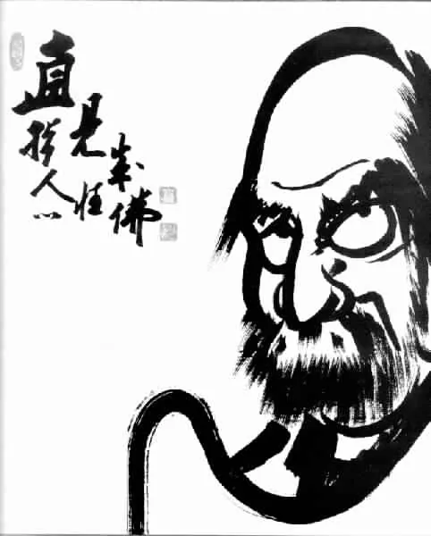
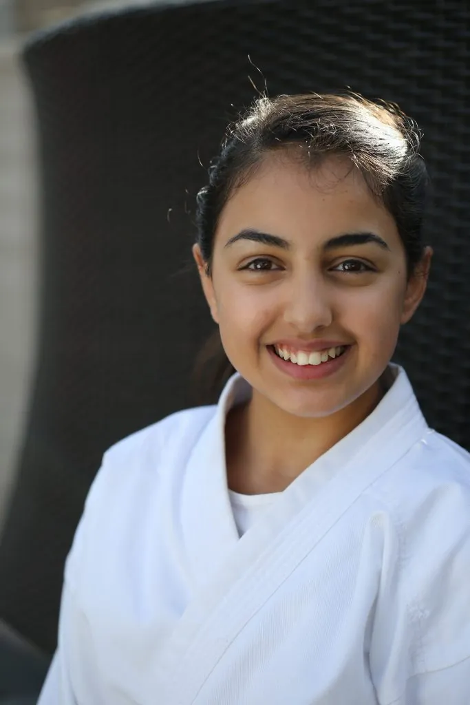
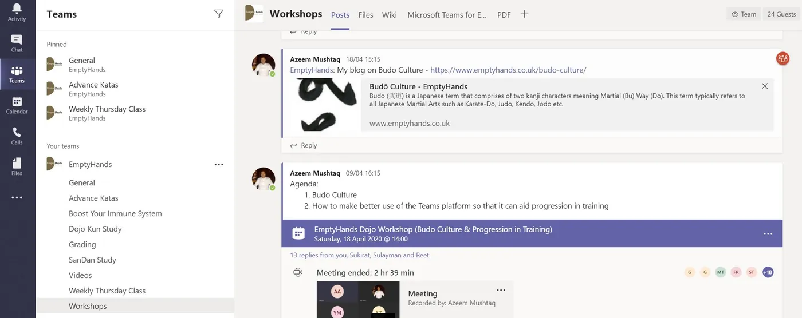
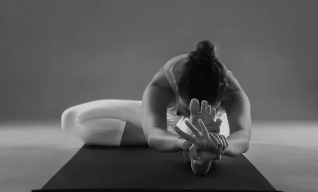
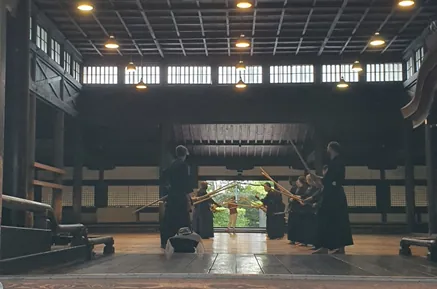
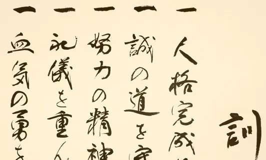

Notes from the dojo
Essays on Karate, Budō, healing and wellbeing — and news from the EmptyHands community.

Reflections & Learning from Lockdown
The purpose of this blog is to share my experiences and some thoughts from the lockdown which have helped me to maintain routine without being perturbed by…

History of Karate-Dō
History of Karate began over a thousand years ago, possibly as early as the fifth century BC when Bodhidharma arrived in China (Henan Province, Songshan…

Sports Injuries
Many studies have shown that Martial Arts (all contact sports) are often associated to high risk of injuries. Subsequently, there is a need of a more pragmatic…

Charity Cup: 5 Ways EmptyHands Combines Giving and Martial Spirit
The grand prize for the winning team! At EmptyHands Karate School, we believe in the power of karate not only as a martial art but as a force for positive…

Workshop with Shihan Chris Rowen
Join us for an exclusive karate workshop with the renowned Shihan Chris Rowen, a 7th Dan black belt. With over 30 years of experience in martial arts, Shihan…

Sōtai – Master Class with Rex Lassalle
Rex Lassalle is a world-renowned Master in the Japanese healing art of Shiatsu and an authority on East Asian astrology and its impact on health. Moreover, he…

Warm-Up
Senior students taking junior class through our standard warm-up

Clinic
EmptyHands Shiatsu Clinic We provide advice, support and rehabilitation for sports injuries, back problems and trauma. The primary therapies used are Shiatsu…

Bodhidharma (Founder of Martial Arts)
Bodhidharma: The Founder of Martial Arts Bodhidharma was a Buddhist monk from the 5th or 6th century. He introduced Zen Buddhism to China and is traditionally…

Trainee Instructors
Student Name Profile Muhammad Zaman Muhammad is 12 years old. He attends Seven Kings High School and is in year 7. He has been training at the Dojo since he…

Chi: Unlocking the 5 Powerful Aspects of Vital Life Force Energy
Understanding Chi This word frequently describes a phenomenon within us in Martial Arts and Healing circles. But what is Chi? We often spell “Chi/Qi/Ki” this…

Virtual Dojo
Our Dojo also operates online using Microsoft Teams. This is a platform that allows our Dojo members to communicate, collaborate, ask questions and attend free…

Yoga & KaraTe
The purpose of this blog is to reflect on the relationship between Yoga and Karate and how they complement each other. In KaraTe we often discuss the term Chi…

Coronavirus: 5 Powerful Strategies to Enhance Your Online Karate Training Experience
Coronavirus Impact on Our Lives The coronavirus pandemic has undoubtedly impacted our lives in countless ways. Adjusting to life under lockdown can take a…

Fight Club: 10 Reasons Why Fight Club is a Cult Classic
Understanding the Roots of Karate Many modern martial arts trace their roots to To-Te Jitsu. This traditional martial art originated in the Ryukyu Islands,…

Immunity Boost: 7 Powerful Tips for a Healthier You
Strengthening Immunity with Traditional Asian Medicine In today’s fast-paced world, accessing local healthcare providers can feel daunting. Fortunately, we can…

Kobudō: Embrace 7 Essential Techniques of Traditional Japanese Weaponry
Kobudō (古武道, Old Martial Arts) Kobudō is a collective term that encompasses a variety of traditional Japanese martial arts focused on weaponry and combat…

Coping with stress: Is Karate the answer?
The Reality of Coping with Stress Have you ever had one of those days? You’re running late to work and forcing yourself into an overcrowded train while coping…

5 Actionable Tips to Becoming a Better Karateka
Kickstart Your Karateka Training: Simple Resolutions for the New Year Start the new year with simple actionable resolutions for your Karate ka training : Easy…

Neurobics for KaraTe
Introduction of Neurobics for Karate: Have you ever wondered which exercises are best for the internal organs and the brain? There is a common misconception…

KaraTe Mindsets
Karate Mindsets and Mental Development Karate Mindsets includes six levels of Karate Mindsets. These levels are rooted in the practice of Zazen. They serve as…

Shotokan Tigers
Shotokan Tigers: The Symbol of Strength and Resilience Hoan Kusugi, a Japanese man, originally created the Shotokan Tigers as a tribute to Karate. He developed…

Evidence Based Karate Training
Evidence-Based Training (EBT), or Evidence-Based Practice (EBP), has served as a cornerstone in various industries, especially in academia and healthcare. It…

Budō Culture
Budō (武道) is a Japanese term that consists of two kanji characters meaning Martial (Bu) Way (Dō). This term typically encompasses all Japanese martial arts,…
Creating Online Dojo With Microsoft Teams
Running a online dojo during social distancing is challenging, but the concept of an online dojo has existed for some time. This innovative approach to martial…

Karate Rules
Principles for Personal Growth There is a world of knowledge beyond the physical practice. The masters often describe this aspect of training as the…
No articles match that search.
Your first lesson is the hardest step. We’ll take it with you.
New students can pay as they go for their first few weeks — just turn up in comfortable clothes.